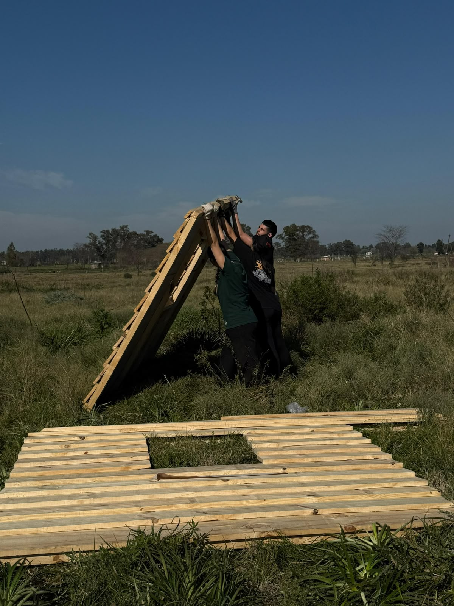
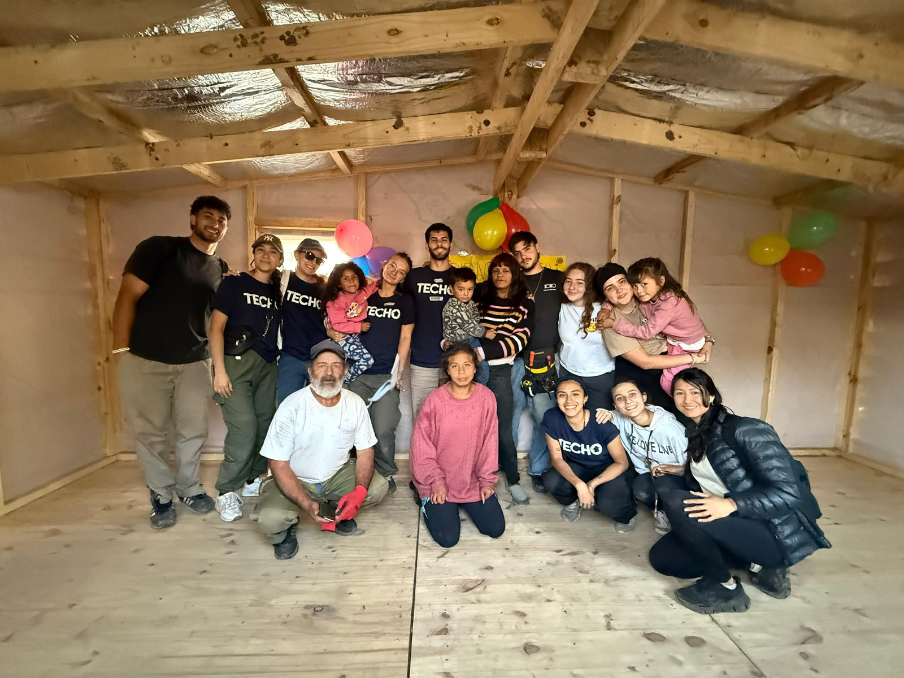
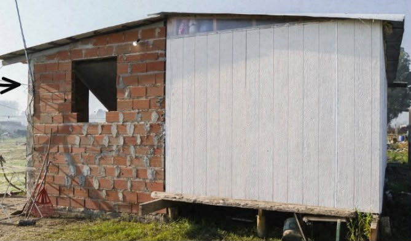
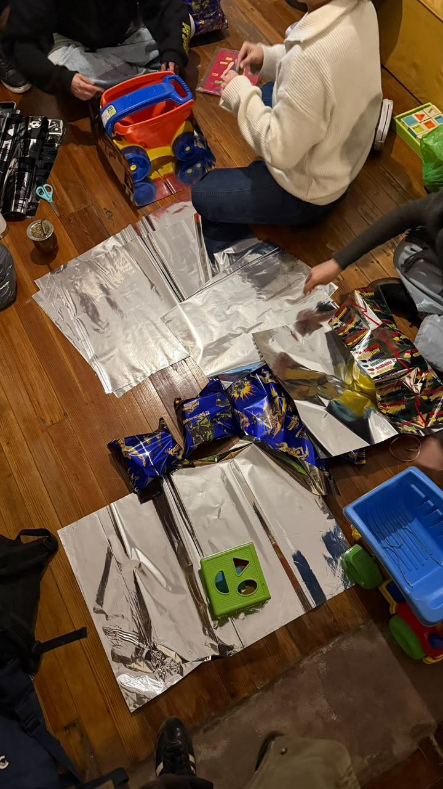

Parada 1 · Florencio Varela
Vivienda de emergencia
El proyecto insignia: casas de madera de 18 m² construidas en un fin de semana junto a la familia.
Un fin de semana de obra
Ver parada 1Recorrido ciudadano · Proyectos sociales
Cinco paradas, de Florencio Varela a la Ciudad de Buenos Aires, para conocer de cerca cómo se construye una vivienda, cómo mejora un barrio y cómo se sostiene el vínculo con las familias. Y para descubrir de qué manera podés sumarte.

TECHO trabaja junto a las familias de los barrios populares para superar la pobreza y la exclusión. Este sitio nace de jornadas reales de voluntariado (la galería "Barrios en Construcción" de la Actividad 1) y las ordena como un recorrido: cada parada es un lugar y una forma distinta de intervenir en el barrio, contada por quien estuvo ahí.
Conocé
Cinco lugares y cinco tipos de intervención, con fotos propias y datos concretos de cada jornada.
Elegí
Jornadas de un par de horas o de un fin de semana entero. No hace falta experiencia previa.
Sumate
Inscribite a una jornada, doná o escribinos: al final del recorrido tenés todas las opciones.
El orden sugerido arranca donde la urgencia es más visible, una vivienda de emergencia en Florencio Varela, y vuelve hacia la Ciudad pasando por Berazategui, Quilmes y Avellaneda. Cada parada es una jornada distinta: no se recorren todas el mismo día.
Distancia total: calculando… (en línea recta, aproximada)
Las ubicaciones son aproximadas, por localidad. Las jornadas se hacen dentro de barrios populares y la dirección exacta se comparte con quienes se inscriben, para cuidar la privacidad de las familias.

Parada 1 · Florencio Varela
El proyecto insignia: casas de madera de 18 m² construidas en un fin de semana junto a la familia.
Un fin de semana de obra
Ver parada 1
Parada 2 · Berazategui
Veredas, caminos y espacios recreativos que se deciden y se construyen junto a los vecinos.
Un día de obra
Ver parada 2
Parada 3 · Quilmes
Una casa pensada para crecer: arranca en 18 m² y la familia la amplía con el tiempo.
Un día de obra
Ver parada 3
Parada 4 · Avellaneda
Una tarde de juegos, talleres y meriendas para las infancias del barrio, más allá de las obras.
Media jornada (4 horas)
Ver parada 4
Parada 5 · Ciudad de Buenos Aires
Ropa, juguetes, pañales y útiles que se recolectan, se clasifican y se entregan en el barrio.
De unos minutos a 3 horas
Ver parada 5Cierre del recorrido
Inscribite a una jornada, calculá tu aporte y elegí la fecha que te quede mejor.
Ir a SumateInscribite a una jornada o escribinos y te ayudamos a elegir por dónde empezar.
Grupo N.º 6 · Diseño y Desarrollo Web. Cada integrante investigó y escribió una parada.